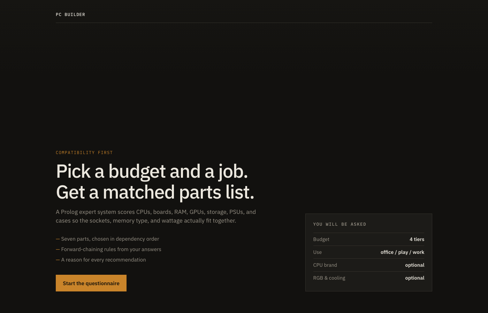
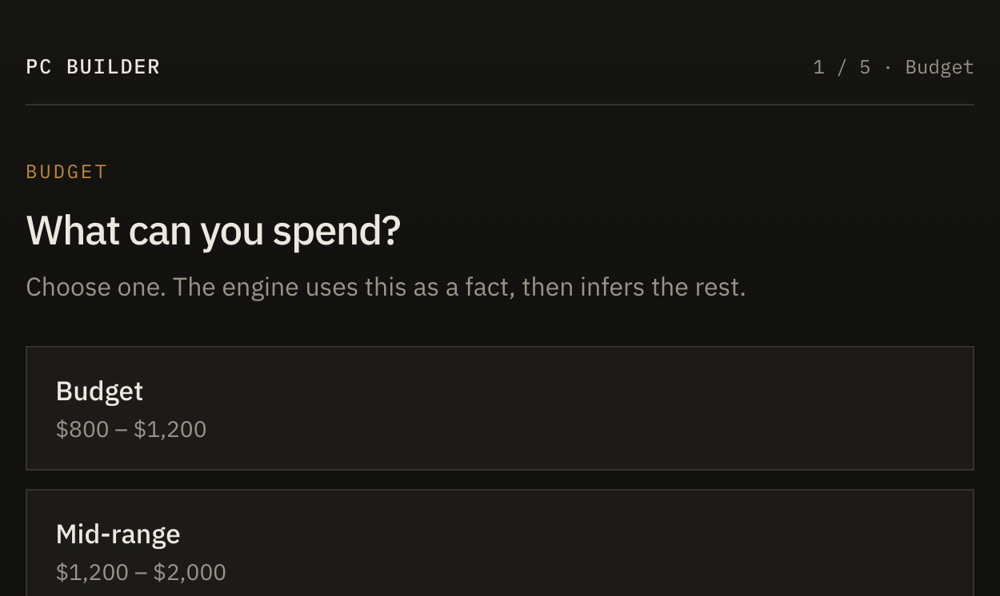
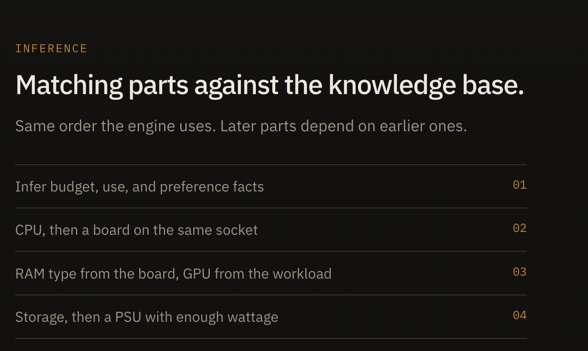
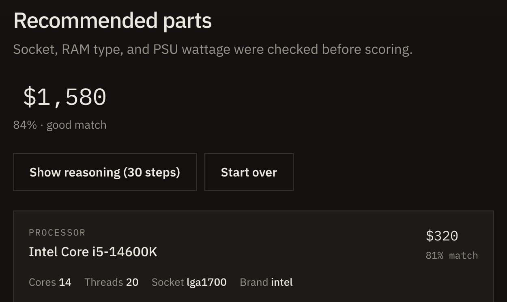

Logic Programming / Expert Systems
A rule-based consultant that asks for budget, use, and a few preferences, then returns a seven-part PC list: CPU, motherboard, RAM, GPU, storage, PSU, and case. The engine is Prolog. The interface is a local web page. Sockets, RAM type, and PSU wattage are checked before parts are scored.
Need SWI-Prolog 9+ and Node.js 16+.
cd backend swipl -s server.pl -g "server, thread_get_message(keep_alive)"
Wait for Server running on http://localhost:8080.
cd frontend npm install npm run dev
Open http://localhost:5173. Answer the questions. The last answer starts inference.
If swipl is not on PATH (macOS app): export PATH="/Applications/SWI-Prolog.app/Contents/MacOS:$PATH". If port 8080 is busy: lsof -i :8080.
Code: this repository (zip or GitHub). The decision logic is in backend/. The UI is in frontend/.
User answers become Prolog facts. Forward-chaining rules add extra facts (priorities, minimum cores, RAM, GPU tier, PSU floor). Parts are then picked in a fixed order because later parts depend on earlier ones. When several parts fit, a score picks one.
Knowledge base: ~72 parts in backend/components.pl, plus compatibility and usage facts in backend/match.pl. Inference: backend/chaining.pl then backend/recommend.pl. Conflict resolution: backend/scoring.pl.
A questionnaire. One question at a time. No Prolog is typed. After the last answer the engine runs and a parts list is shown. “Why this part” calls /api/explain. “Alternatives” calls /api/alternatives. “Show reasoning” shows the Prolog trace.




All five were run against POST http://localhost:8080/api/build. Expected checks are the sourced rules (socket, RAM type, cores, RAM size, PSU). Actual output is what the engine returned.
Input: budget=mid_range, usage=office, cpu=none, rgb=dont_care, cooling=either
Expect: ≥4 cores, ≥8 GB RAM, socket = board, RAM type = board, PSU ≥ GPU TDP + cores×10 + 200 W.
| Part | Chosen | Check |
|---|---|---|
| CPU | Intel Core i5-14600K, 14c, LGA1700, $320 | Cores ≥ 4 |
| Board | ASUS TUF Gaming Z690, LGA1700, DDR5, $250 | Socket match |
| RAM | Corsair Vengeance 32 GB DDR5-5600, $130 | DDR5, ≥ 8 GB |
| GPU | NVIDIA RTX 4070, 200 W, $550 | — |
| Storage | Samsung 980 Pro 1 TB NVMe, $120 | NVMe |
| PSU | EVGA SuperNOVA 850 GT, 850 W, $130 | Need 200+140+200=540; 850 ≥ 540 |
| Case | NZXT H510, $80 | — |
Result: $1,580 · 84% · pass.
Input: mid_range, gaming, 1440p, intel, rgb=nice_to_have, cooling=aio
Expect: Intel CPU, LGA1700 board, ≥6 cores, ≥16 GB, GPU at least mid-range tier, case with AIO support.
| Part | Chosen | Check |
|---|---|---|
| CPU | Intel Core i5-14600K, 14c | Intel, ≥ 6 cores |
| Board / RAM | Z690 + 32 GB DDR5 | Socket and type match |
| GPU | NVIDIA RTX 4070 (mid_range) | Meets 1440p minimum tier |
| Case | NZXT H510, AIO yes, RGB yes | AIO support |
Result: $1,580 · 85% · pass. Same mid-range parts as T1 except confidence on CPU/GPU/RAM is higher because of the gaming multipliers.
Input: high_end, content_creation, amd, rgb=dont_care, cooling=either
Expect: AMD CPU, ≥12 cores, ≥32 GB, AM5 → DDR5.
| Part | Chosen | Check |
|---|---|---|
| CPU | AMD Ryzen 9 7900X, 12c, AM5, $500 | AMD, 12 cores |
| Board | ASUS ROG Strix X670E-E, AM5, DDR5 | AM5 + DDR5 |
| RAM | G.Skill Trident Z5 64 GB DDR5 | ≥ 32 GB |
| GPU / PSU | RTX 4080 320 W · RM1000e 1000 W | Need 320+120+200=640; 1000 ≥ 640 |
Result: $2,830 · 93% · pass.
Input: enthusiast, gaming, 4k, cpu=none, rgb=very_important, cooling=aio
Expect: high-end or enthusiast GPU, large PSU, RGB case with AIO.
| Part | Chosen | Check |
|---|---|---|
| CPU | AMD Ryzen 9 7950X3D, 16c, AM5 | ≥ 6 cores |
| GPU | NVIDIA RTX 4090, 450 W, $1,600 | Enthusiast / 4K class |
| PSU | Seasonic Prime TX-1300, 1300 W | Need 450+160+200=810; 1300 ≥ 810. NVIDIA lists 850 W system power for a 4090. |
| RAM / case | 64 GB Dominator RGB · Lian Li O11 (RGB + AIO) | RGB and AIO |
Result: $4,200 · 96% · pass.
Input: budget, office, amd, rgb=dont_care, cooling=air
Expect: AMD, AM4 or AM5, matching RAM, only budget-tier parts, cheaper than T1.
| Part | Chosen | Check |
|---|---|---|
| CPU | AMD Ryzen 7 5700X, 8c, AM4, $180 | AMD |
| Board | Gigabyte B550M DS3H, AM4, DDR4 | AM4 → DDR4 only |
| RAM | Kingston Fury 16 GB DDR4 | DDR4, ≥ 8 GB |
| GPU / PSU | RTX 3060 170 W · CX650M 650 W | Need 170+80+200=450; 650 ≥ 450 |
| Case | Corsair 4000D, no RGB | Budget tier |
Result: $845 · 75% · pass. Cheaper than T1; AM4/DDR4 pairing is the compatibility check.
These are the rules encoded in the system. They were not invented for the assignment and were not taken from a chatbot. Each row names the Prolog file and the published page the number or constraint comes from.
| # | Rule | Where encoded | Source |
|---|---|---|---|
| 1 | IF usage = office THEN min CPU cores = 4 | match.pl usage_needs_cores(office, 4, 0.9) |
Microsoft Windows 11: processor must have 2 or more cores. Encoded as 4, the common desktop i3 SKU (Intel Core i3-12100F, 4 cores). Microsoft Support — Windows 11 requirements; Intel i3-12100F specifications. |
| 2 | IF usage = office THEN min RAM = 8 GB | usage_needs_ram(office, 8, 0.85) |
Microsoft lists 4 GB as the Windows 11 minimum. HP’s published RAM guide treats 8 GB as the baseline for basic everyday PCs. The KB uses that 8 GB floor. Windows 11 specifications; HP — How much RAM do I need. |
| 3 | IF usage = gaming THEN min CPU cores = 6 | usage_needs_cores(gaming, 6, 0.95) |
Intel’s mainstream gaming desktop SKU in this generation is a 6-core Core i5 (i5-12400F). Intel Core i5-12400F specifications. |
| 4 | IF usage = gaming THEN min RAM = 16 GB | usage_needs_ram(gaming, 16, 0.95) |
Steam Hardware Survey: 16 GB is the most common installed RAM on gaming PCs. Steam Hardware Survey. |
| 5 | IF usage = programming THEN min CPU cores = 8 | usage_needs_cores(programming, 8, 0.92) |
Microsoft Visual Studio 2022: “Quad-core or better recommended.” The KB uses the next common desktop compile SKU, an 8-core Ryzen 7. Visual Studio 2022 system requirements; AMD Ryzen 7 7700X (8 cores). |
| 6 | IF usage = programming THEN min RAM = 16 GB | usage_needs_ram(programming, 16, 0.90) |
“We recommend 16 GB RAM for typical professional solutions.” Visual Studio 2022 system requirements. |
| 7 | IF usage = content_creation THEN min CPU cores = 12 | usage_needs_cores(content_creation, 12, 0.98) |
Adobe Premiere Pro recommended CPUs are current-generation multi-core Ryzen / Intel chips. The KB encodes a 12-core Ryzen 9 class part (7900X). Adobe Premiere Pro technical requirements; AMD Ryzen 9 7900X (12 cores). |
| 8 | IF usage = content_creation THEN min RAM = 32 GB | usage_needs_ram(content_creation, 32, 0.98) |
Adobe Premiere Pro: “32 GB or more for 4K and higher.” Adobe Premiere Pro technical requirements. |
| 9 | IF gaming_level = 1080p THEN min GPU tier = budget | gaming_needs_gpu('1080p', budget, 0.90) |
NVIDIA positions the lower 40-series cards for 1080p / entry 1440p. Encoded as the budget GPU tier in the KB. NVIDIA GeForce RTX 4070 family. |
| 10 | IF gaming_level = 1440p THEN min GPU tier = mid_range | gaming_needs_gpu('1440p', mid_range, 0.95) |
NVIDIA RTX 4070 (mid-range in this KB, 200 W TGP) is specified for 1440p gaming power figures. NVIDIA RTX 4070 family. |
| 11 | IF gaming_level = 4k THEN min GPU tier = high_end | gaming_needs_gpu('4k', high_end, 0.98) |
NVIDIA RTX 4080 / 4090 are the 4K cards in this generation. NVIDIA GeForce RTX 4090. |
| 12 | IF gaming_level = 1080p THEN min PSU hint = 650 W | chaining.pl 1080p → min_psu_wattage, 650 |
NVIDIA RTX 4070 required system power: 650 W. RTX 4070 Quick Start Guide (PDF). |
| 13 | IF gaming_level = 4k THEN min PSU hint = 850 W | chaining.pl 4k → min_psu_wattage, 850 |
NVIDIA RTX 4090 required system power: 850 W. NVIDIA RTX 4090 specifications; NVIDIA — RTX 40 Series power specifications. |
| 14 | CPU socket must equal motherboard socket | compatible_socket(S, S) |
Intel desktop 12th–14th gen use LGA1700; AMD Ryzen 7000 uses AM5. A CPU will not seat on the wrong socket. Intel 12th Gen datasheet — LGA1700; AMD Socket AM5 chipsets. |
| 15 | IF socket = am5 THEN RAM type = DDR5 | requires_ram_type(am5, ddr5) |
AMD AM5 platforms are specified with DDR5 only. AMD AM5 chipsets; AMD AM5 quick reference (PDF). |
| 16 | IF socket = am4 THEN RAM type = DDR4 | requires_ram_type(am4, ddr4) |
AMD AM4 platforms use DDR4. AMD Socket AM4 chipsets. |
| 17 | IF socket = lga1700 THEN RAM type = DDR4 or DDR5 (board-specific) | requires_ram_type(lga1700, ddr4) and ddr5 |
Intel 12th Gen datasheet documents both DDR4 and DDR5 memory interfaces; a given motherboard implements one. Intel 12th Gen datasheet. |
| 18 | Required watts = GPU TDP + (CPU cores × 10) + 100; safe PSU = required + 100 | system_power_requirement/3 then +100 in recommend_psu |
NVIDIA publishes GPU TGP and a higher “required system power” that already includes the rest of the PC (e.g. 200 W TGP → 650 W system for RTX 4070; 450 W TGP → 850 W for RTX 4090). The KB uses TDP + a CPU and overhead term so PSU size tracks the selected CPU and GPU. NVIDIA RTX 40 Series power specifications; RTX 4070 QSG — 650 W minimum. |
| 19 | A budget tier may only buy that tier or cheaper | can_afford/2 |
Intel and AMD sell segmented SKUs (i3/i5/i7/i9, Ryzen 5/7/9). The KB maps that ladder to four tiers. Intel Core processor families; AMD Ryzen desktop processors. |
| 20 | Storage type must be NVMe | recommend.pl Type = nvme |
Microsoft recommends installing Windows and Visual Studio on an SSD. The KB only stocks NVMe SSDs. Visual Studio 2022 — “solid-state drive (SSD)”; Samsung 980 PRO NVMe SSD. |
| 21 | IF cooling = aio THEN prefer a case with radiator mounts | scoring.pl AIO + case AIOSupport = yes → +25 |
Corsair documents radiator sizes per case (4000D: 360 mm front, 280 mm roof). A case without those mounts cannot take an AIO. Corsair — 4000D radiator capacity. |
| 22 | IF rgb = very_important THEN prefer RGB RAM and cases | scoring.pl RGB +20 / +10 |
RGB is a published product option (e.g. Corsair Vengeance RGB vs non-RGB). The engine only scores it when the user asks. Corsair Vengeance RGB DDR5. |
| 23 | Pick the motherboard after the CPU | recommend_build order |
The socket is a property of the CPU package (Intel LGA1700 / AMD AM4 / AM5). The board is chosen to match that socket. Same Intel and AMD pages as rules 14–17. |
| 24 | Pick the PSU after CPU and GPU | recommend_psu reads selected TDP and cores |
NVIDIA’s install steps start with “Check your power supply” using the GPU’s required system power, which depends on the rest of the PC. NVIDIA RTX 4090 — “Check your power supply”. |
Preference bonuses (Intel vs AMD +15, AIO −15 if the case has no radiator) are scoring, not physical laws. The physical constraints (socket, RAM generation, watts) come from the vendor pages above. No expert was interviewed.
Entry: recommend_build/0 in backend/recommend.pl.
recommend_build :-
infer_facts,
infer_usage_requirements,
(user_choice(usage, gaming) -> infer_gaming_requirements ; true),
recommend_cpu,
recommend_motherboard,
recommend_ram,
recommend_gpu,
recommend_storage,
recommend_psu,
recommend_case.
Forward chaining (backend/chaining.pl) writes inferred/2 facts from the user’s answers, then requirement/2 facts from the tables in match.pl.
usage_needs_cores(office, 4, 0.9).
usage_needs_cores(gaming, 6, 0.95).
usage_needs_cores(programming, 8, 0.92).
usage_needs_cores(content_creation, 12, 0.98).
usage_needs_ram(office, 8, 0.85).
usage_needs_ram(gaming, 16, 0.95).
usage_needs_ram(programming, 16, 0.90).
usage_needs_ram(content_creation, 32, 0.98).
gaming_needs_gpu('1080p', budget, 0.90).
gaming_needs_gpu('1440p', mid_range, 0.95).
gaming_needs_gpu('4k', high_end, 0.98).
compatible_socket(S, S).
requires_ram_type(am4, ddr4).
requires_ram_type(am5, ddr5).
requires_ram_type(lga1700, ddr4).
requires_ram_type(lga1700, ddr5).
system_power_requirement(GPUTDP, CPUCores, TotalWatts) :-
TotalWatts is GPUTDP + CPUCores * 10 + 100.
Each recommender: query the KB with filters → score survivors → keep the highest score → store alternatives. CPU filter uses min cores, brand, and can_afford. Motherboard filter uses the selected CPU socket. RAM filter uses the board’s RAM type and min capacity. GPU filter uses gaming tier when usage is gaming. Storage is NVMe only. PSU wattage must be ≥ required + 100; budget may be relaxed so power is never under-sized. Case score adds RGB and AIO bonuses.
FinalScore (CPU) = confidence×100 + tierBonus + brandBonus confidence (CPU) = (baseScore/100) × usageMultiplier
Motherboard, storage, PSU, and case use base score + bonuses (no usage multiplier). Full scoring is in backend/scoring.pl. Explanations are in backend/explanations.pl.